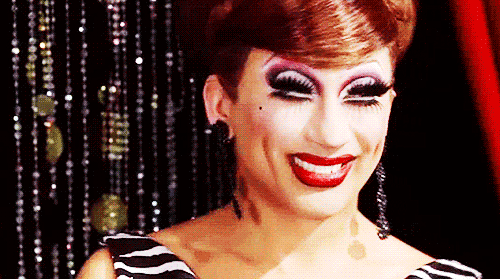

Part One: How Did Each Winner Actually Perform?
This chart plots each season's winner by their episode placements — wins, highs, safes, lows, and bottom two appearances — expressed as a percentage of total episodes competed. Presenting the data proportionally allows us to compare queens across seasons of very different lengths on something closer to a level playing field.
The most important caveat is season length. A queen in a 14-episode season has more opportunities to accumulate wins and high placements than one competing across only 10 episodes, and a single stumble hits harder statistically when there are fewer episodes to absorb it. Bob the Drag Queen is the clearest example: Bob went to the bottom only once all season, but because Season 8 was notably shorter, that single appearance reads as roughly 12% — the same percentage as queens who may have visited the bottom twice in a longer run.
With that in mind, standout performers here include Bianca Del Rio (Season 6) and Aquaria (Season 10), both of whom maintained dominant win and high rates across full-length seasons with almost no low or bottom placements. On the other end, Yvie Oddly's (Season 11) record is notably volatile — a reminder that very different trajectories can lead to the same crown.
